Narada Resort
Among mountains and seas
Houses set in uncommon landscapes, where the stay follows the land and the water — a holiday that begins the moment you arrive.
A true holiday begins at Narada.
Narada is a high-end hotel brand of Junting Hotel Group, made for a life of leisure. Its character is drawn from Southern Song culture, and from a determination to keep a Chinese voice: distinctive architecture, interiors designed from the first sketch, and a cultural theme that belongs to the site. The stay is the starting point — a leisure life in which each guest finds their own pace, and a holiday that stays with you.
The brand is arranged as three houses under one idea: Narada Resort, among mountains and seas; Narada Grand Hotel, in the life of the city; and Narada Li, a return to a quieter rhythm. Together they form a circle of places you might come back to. There are houses in 23 provinces and regions of China, set among more than a hundred landscapes and historic sites — more than 200 hotels, and nearly 60,000 rooms.
The official Narada film, 《君澜—不虚此行》 — a journey worth taking. Just under seven minutes.
Three kinds of house
Among mountains and seas
Houses set in uncommon landscapes, where the stay follows the land and the water — a holiday that begins the moment you arrive.
In the life of the city
A fuller city hotel, still with a cultural character of its own — a place to arrive, and to linger, in the grain of an old city or a new one.
A return to a quieter rhythm
A more intimate house, made for a slower kind of leisure — less a grand hotel than a way of living, for a while.
Feel Narada
The same idea takes many forms. There is a Narada stay for the coast and the old town, for a hot spring and the snow, for a garden in the city and a house among fields, for travelling with children and for a quieter kind of rest. The photographs below are from Narada houses across China; they are not tied here to a single property.
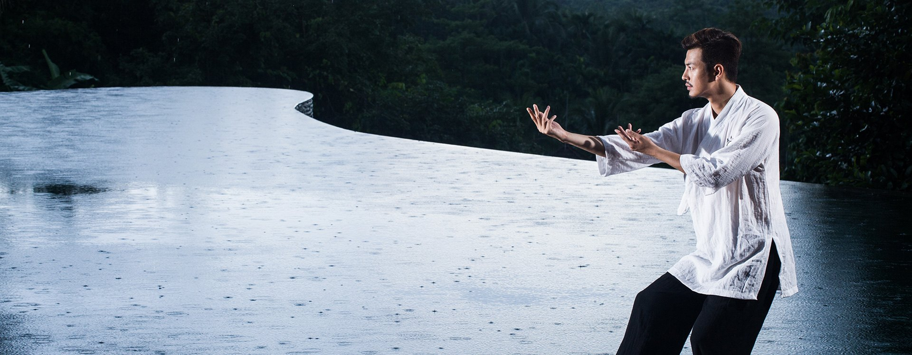
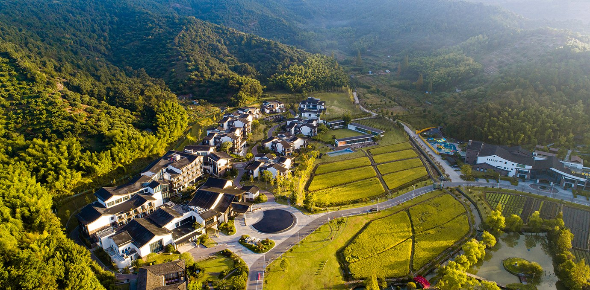
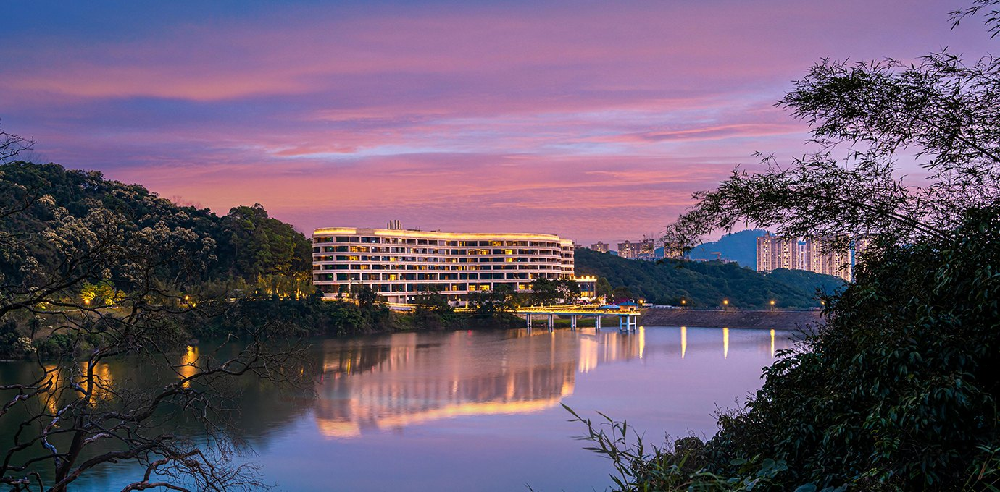
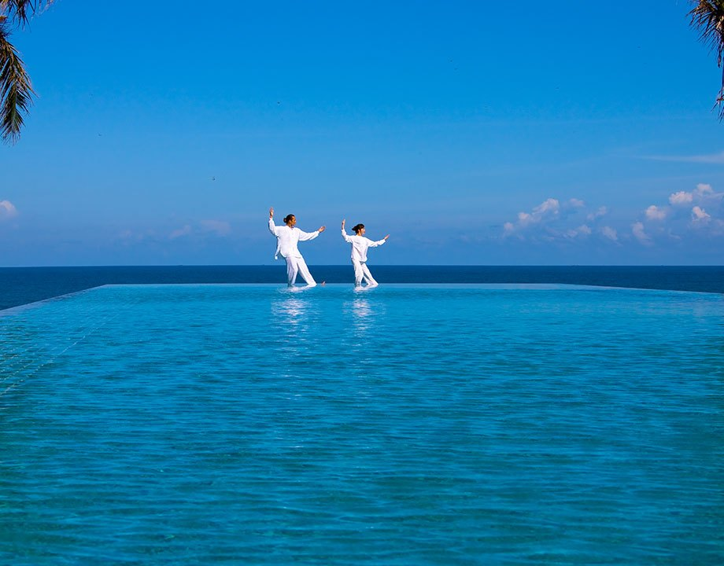
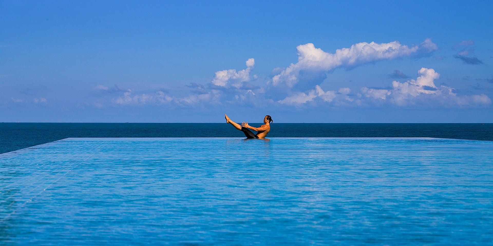
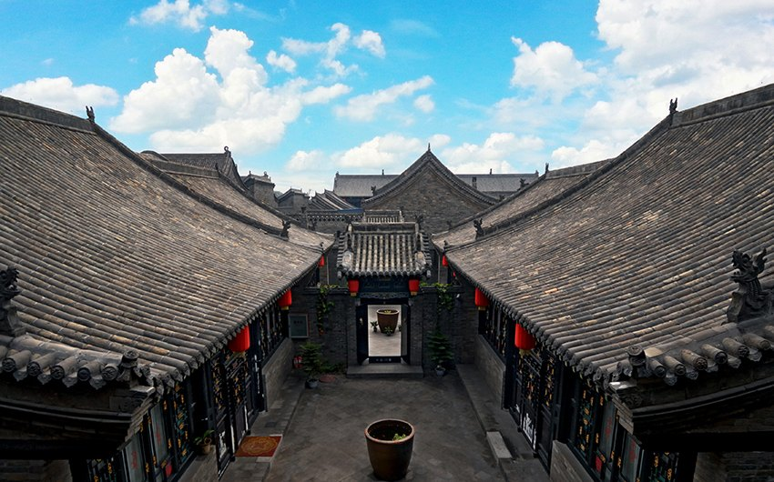
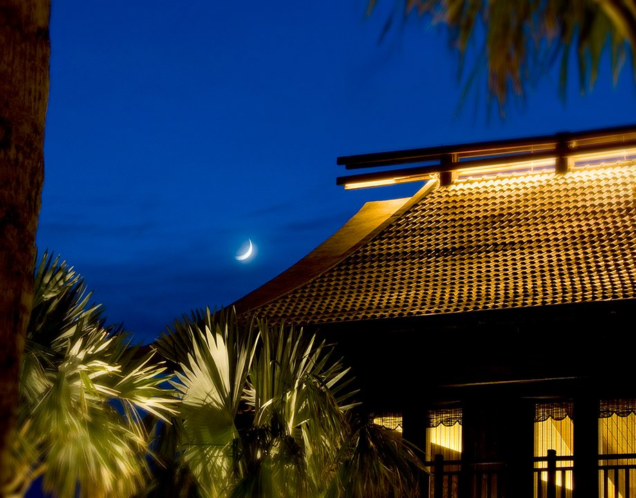
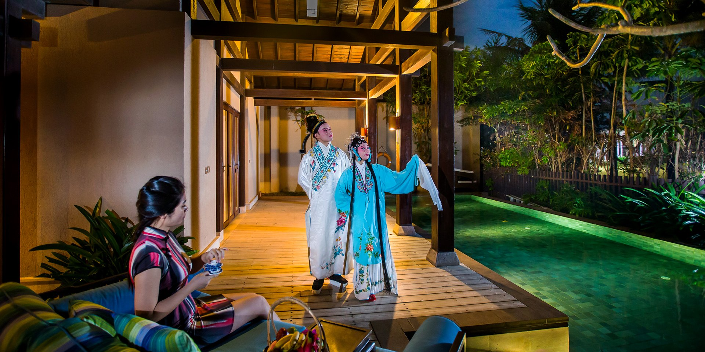
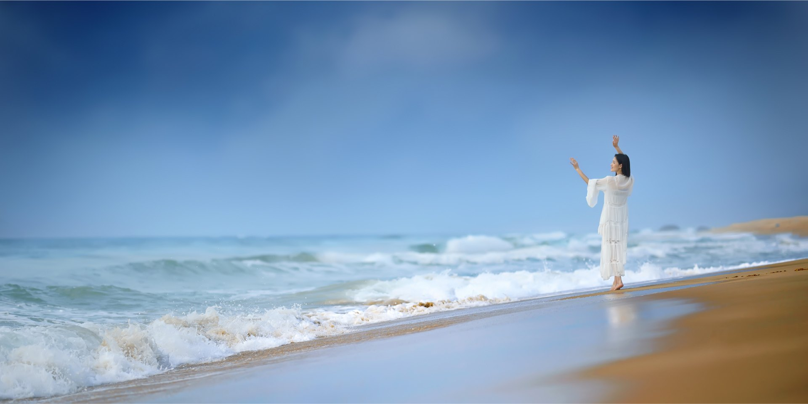
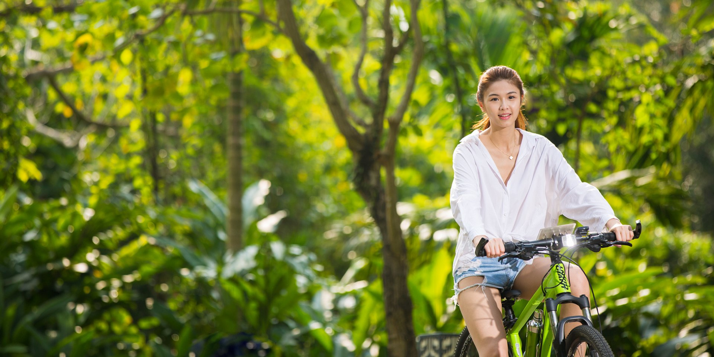
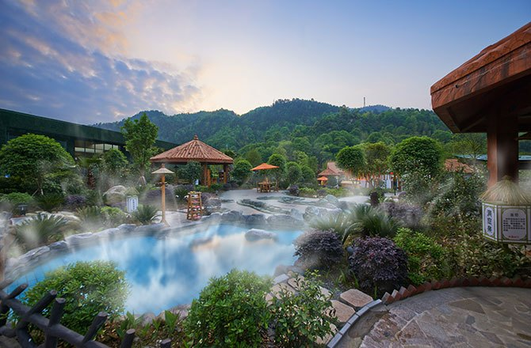
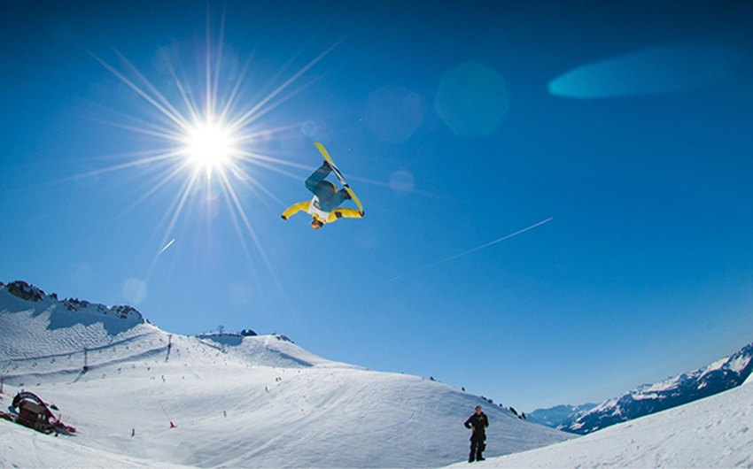
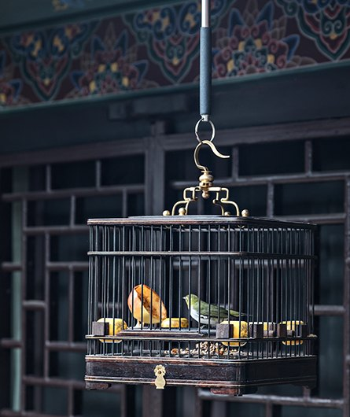
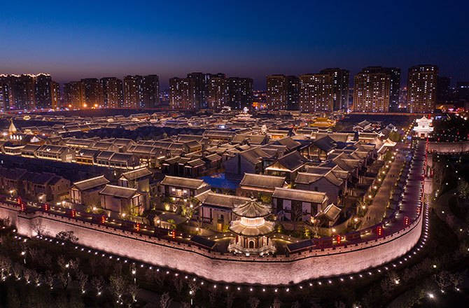
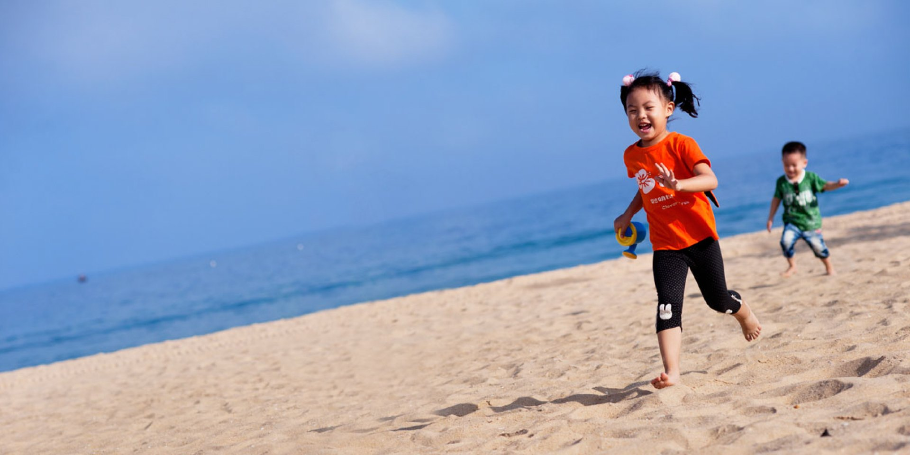
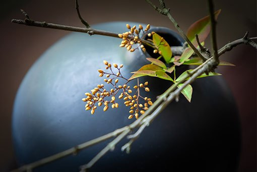
The coast · Family · Wilderness · Hot springs · Old towns · The countryside · Wellness · The city · Snow · Private villas
Houses we recommend
On a journey with Enlight, these are the Narada houses we return to most often.
The house at Zhoushan sits close to Putuoshan, and is a natural place from which to encounter the island’s Chan Buddhist culture. Narada Jinhua Hotel is a Jiangnan garden house, set with Dongyang wood carving, and has the quieter character of old Wuzhou. Wudang Mountain Narada Resort stands on Taiji Lake, at the foot of the mountain — a stay among the hills and the water, and the house we use for the solar-term retreats.
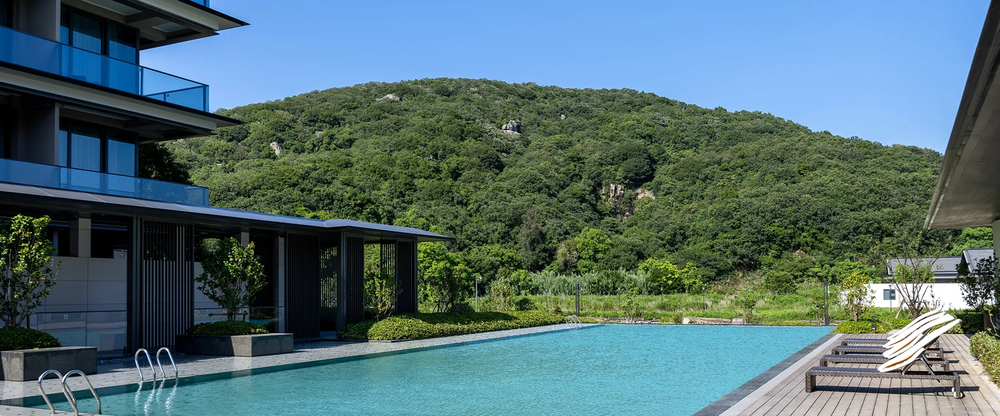
Zhoushan Puzhen Narada Resort
Zhujiajian · Putuo · the East China Sea
About fifteen minutes by fast ferry from Putuoshan, one of the four sacred Buddhist mountains of China — the practical way to be close to the island.
See the house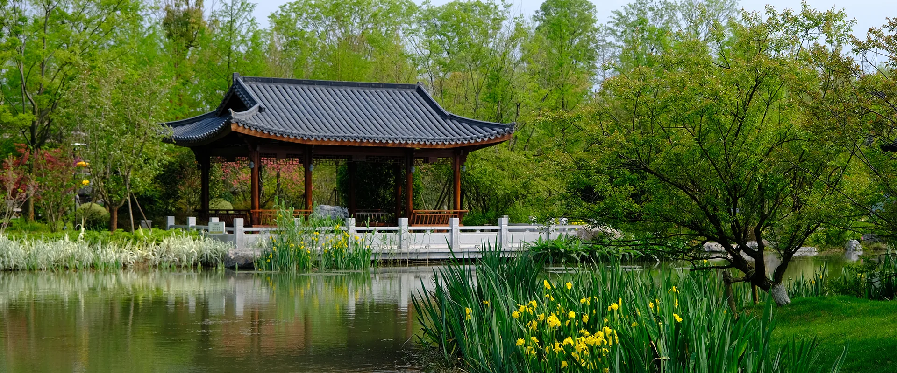
Narada Jinhua Hotel
Jindong · Jinhua · beside Chishan Park
A garden of black tile and white walls, set with Dongyang wood carving, in the tradition of Jiangnan — a quieter kind of city stay, with the character of old Wuzhou.
See the house
Wudang Mountain Narada Resort
At the foot of Wudang · Taiji Lake
Built among the hills and the water, next to the scenic area itself — the house we use for the solar-term retreats, or you may choose the courtyard guesthouse Yuanhe Meisu instead.
The solar-term retreatsFor the solar-term retreats on Wudang Mountain, guests choose one house — Wudang Mountain Narada Resort, or Yuanhe Meisu — not both.